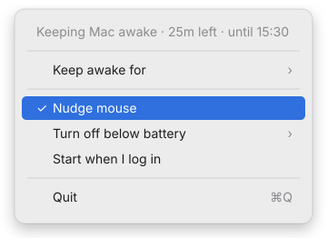

Walk away. Come back to the same session.
You start a build, a migration, or a big download, and go grab a coffee. Twenty minutes later the Mac has locked itself, the VPN has dropped, and the job is gone. CursorMov stops that from happening.
One click
Left-click the cup to turn it on, click again to turn it off.
No sleep, no lock
While it's on, your Mac won't idle sleep, dim the screen, or lock itself.
Mouse nudge
When you're away, it moves the pointer one pixel and back once a minute. Invisible, but macOS sees you as present.
Never in your way
The nudge only runs while you're idle. No Dock icon, no window, no notifications.
Timed sessions
Keep awake for 15 minutes up to 4 hours, and it switches itself off when time is up.
Battery safety
On battery, it switches off at 20% (or 10%, 30%, never) so it can't drain your MacBook flat.
Get started
Download it and you're running in under a minute. Requires macOS 26 or later, on Apple silicon or Intel.
-
Download the DMG
Get CursorMov-1.1.0.dmg from the latest GitHub release.
-
Drag it into Applications
Open the DMG and drag the CursorMov cup onto the Applications folder next to it.
-
Open it the first time
CursorMov is free and open source, so it isn't signed with a paid Apple Developer ID, and macOS blocks it the first time.
Open it once and close the warning. Then go to System Settings → Privacy & Security, scroll down, click Open Anyway next to CursorMov, and confirm with Open. You only do this once.
Prefer Terminal?xattr -dr com.apple.quarantine /Applications/CursorMov.app -
Allow the mouse nudge
The first time you turn CursorMov on, macOS asks whether it may control the pointer. Click Open System Settings, then switch CursorMov on under Privacy & Security → Accessibility.
Rather not? Keeping the Mac awake still works without it. Only the nudge is skipped. -
Click the cup
An empty coffee cup sits in your menu bar. Click it: it fills up and starts steaming, and your Mac stays awake until you click it again.
Or build it from source
You'll need Xcode 26 (or its command line tools with Swift 6.2).
git clone https://github.com/metayoub/CursorMov.git
cd CursorMov
scripts/build-app.sh
mv build/CursorMov.app /Applications/
open /Applications/CursorMov.apprm -rf /Applications/CursorMov.app before moving the new copy in.Using it
- Left-click the cup
- Turns keep-awake on or off.
- Right-click (or Control-click) the cup
- Opens the menu with the status and settings.
- Keep awake for
- A timed session: 15 or 30 minutes, 1, 2 or 4 hours. The status line shows time left and when it ends.
- ⚠︎ Allow mouse nudge in Accessibility…
- Appears when the nudge needs permission. Click it to open the right Settings page.
- Nudge mouse
- Turns the mouse nudge on or off. Your choice is remembered.
- Turn off below battery
- On battery, switch off at 10%, 20% (default) or 30%, or never.
- Start when I log in
- Adds CursorMov to your login items.
- Quit
- Stops CursorMov and lets your Mac sleep normally again.

Good to know
- Keep the lid open. macOS always sleeps a MacBook when the lid closes, and no regular app can prevent that.
- VPN-side timeouts. If your VPN server disconnects sessions with no traffic, keeping the Mac awake won't help with that.
- Rebuilt the app? macOS may treat it as new. If the nudge stops working, remove CursorMov from the Accessibility list and add it again.
- See it working: while it's on,
pmset -g assertionslists “CursorMov is keeping the Mac awake”.